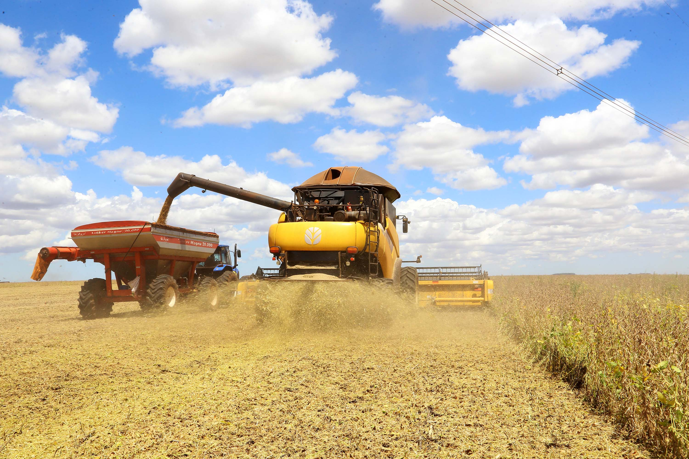
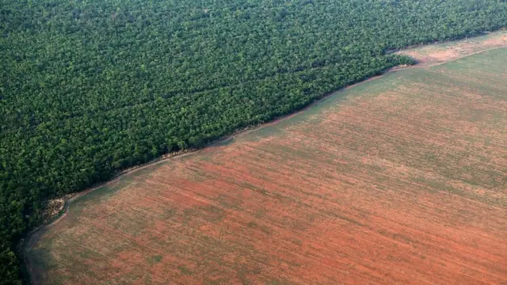

🚜 O que é o Agronegócio?
O agronegócio engloba todas as atividades ligadas à produção,
processamento e comercialização de produtos agrícolas e pecuários.
📈 Importância Econômica
- Geração de empregos.
- Movimentação da economia.
- Exportação de produtos.
- Fortalecimento das cooperativas.
🌱 Destaque do Paraná
O Paraná é referência nacional pela produtividade,
tecnologia e qualidade de seus produtos agrícolas.

🌿 Impactos do Agro
🌳 Desmatamento
Reduz habitats naturais e afeta a biodiversidade.
💧 Contaminação da Água
O uso inadequado de defensivos agrícolas pode atingir rios e lençóis freáticos.
🌾 Erosão do Solo
O manejo incorreto diminui a fertilidade do solo.
🌡️ Emissão de Gases
Atividades agropecuárias contribuem para o efeito estufa.
